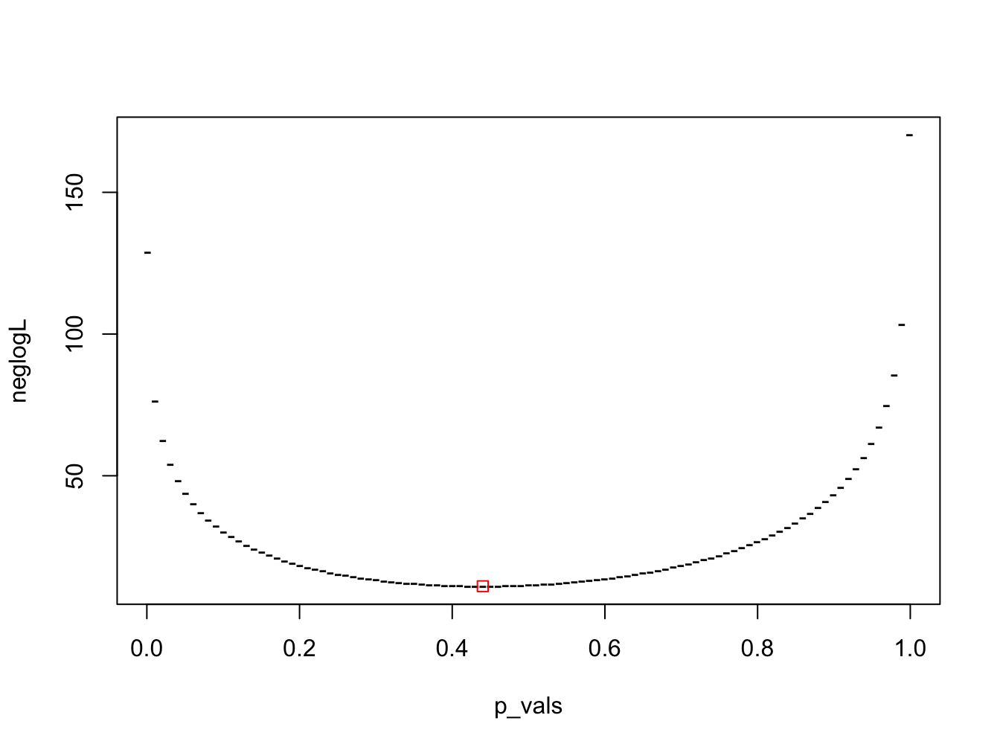

Solution: Model Answers: MLE
A potentially biased coin is tossed 10 times and the number of heads recorded. The experiment is repeated 5 times and the number of heads recorded was 3, 2, 4, 5 and 2 respectively.
We need to choose the correct pdf and then write a likelihood function in R. In this case, we will use the binomial distribution. In this case, this is one of the ways we write the solution.
neglogLikelihood <- function(p, n, x) {
# compute density for each data element in x
logF <- dbinom(x, n, prob = c(p, 1 - p), log = TRUE)
return(-sum(logF)) # return negative log-likelihood
}
n <- 10 # number of coin tosses
x <- c(3, 2, 4, 5, 2) # number of heads observed
p_init <- 0.5 # initial value of the probability
# run optim to get maximum likelihood estimates
out <- optim(p_init, neglogLikelihood, gr = NULL, n, x, method = "L-BFGS-B",
lower = 0.001, upper = 1-0.001)
# create a grid of probability values
p_vals <- seq(0.001, 1 - 0.001, length = 101)
# use apply to compute the negative log-likelihood for each probability value
neglogL <- apply(matrix(p_vals), 1, neglogLikelihood, n, x)
# plot negative log-likelihood function and overlay maximum (negative)
# log-likelihood estimate
plot(p_vals, neglogL, pch = "-")
points(out$par, out$value, col = "red", pch = 0)